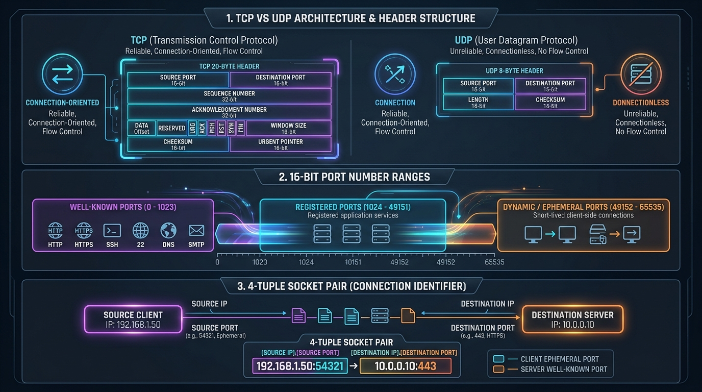

Understand process-to-process delivery, 16-bit Port numbers, Socket pairs, UDP's lightweight 8-byte header, and a comprehensive TCP vs UDP comparison.
While the Network Layer delivers packets **Host-to-Host** (from source IP to destination IP), the Transport Layer is responsible for **Process-to-Process delivery** (delivering data to the specific application program running on that host).
A Port Number is a 16-bit integer (ranging from 0 to 65535) used to identify a specific process/service on a network device.
| Port Category | Range | Description & Well-Known Examples |
|---|---|---|
| Well-Known Ports | 0 – 1023 | Reserved for standard system protocols. HTTP (80), HTTPS (443), SSH (22), FTP (20/21), DNS (53), SMTP (25), DHCP (67/68). |
| Registered Ports | 1024 – 49151 | Assigned by IANA for specific vendor applications. MySQL (3306), PostgreSQL (5432), Redis (6379), RDP (3389). |
| Dynamic / Ephemeral Ports | 49152 – 65535 | Temporary ports assigned dynamically by client OS for outbound client connections. |
A Socket is an end-point for network communication, formed by combining an IP address and a Port number:
(Source IP, Source Port, Destination IP, Destination Port)
UDP (RFC 768) is an unreliable, connectionless, lightweight Transport Layer protocol. It provides minimal process-to-process communication with almost zero protocol overhead.
DNS (Domain Name System), VoIP (Voice over IP), Video Streaming (IPTV, YouTube live), Online Gaming, DHCP, TFTP, SNMP.
The UDP header consists of exactly 8 bytes (64 bits) divided into four 16-bit fields:

| Feature | TCP (Transmission Control Protocol) | UDP (User Datagram Protocol) |
|---|---|---|
| Connection Type | Connection-Oriented (3-way handshake) | Connectionless (No handshake) |
| Reliability | Reliable (Guaranteed delivery via ACKs & Retransmission) | Unreliable (Best-effort delivery; packets can be lost) |
| Data Transfer Unit | Continuous Byte Stream | Independent Datagrams |
| Header Size | 20 – 60 Bytes | Fixed 8 Bytes |
| Speed / Overhead | Slower due to handshake, ACKs & congestion control | Extremely Fast with minimal overhead |
| Flow & Congestion Control | Yes (Sliding Window & AIMD Congestion Control) | None |
| Ordering | Guaranteed in-order delivery (Sequence Numbers) | No ordering guarantees (Packets can arrive out-of-order) |
| Traffic Types | Unicast only (Point-to-Point) | Unicast, Multicast, and Broadcast |
| Typical Use Cases | Web (HTTP/S), Email (SMTP), File Transfer (FTP), SSH | DNS, VoIP, Live Streaming, Online Gaming, DHCP |